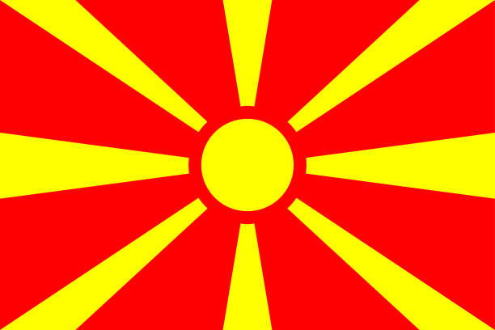

Nordmazedonien – Balkanland ohne Meer
Nordmazedonien liegt in Südosteuropa.
Die Hauptstadt ist Skopje.
Geografie und Klima
Das Land ist bergig mit vielen Seen.
Das Klima ist kontinental.
Geschichte und Kultur
Das Land hat eine lange und vielfältige Geschichte.
Sprache und Regionen
Die Amtssprache ist Mazedonisch.
Wirtschaft und Tourismus
Landwirtschaft und Dienstleistungen sind wichtig.
Fazit
Nordmazedonien ist kulturell vielfältig und traditionsreich.